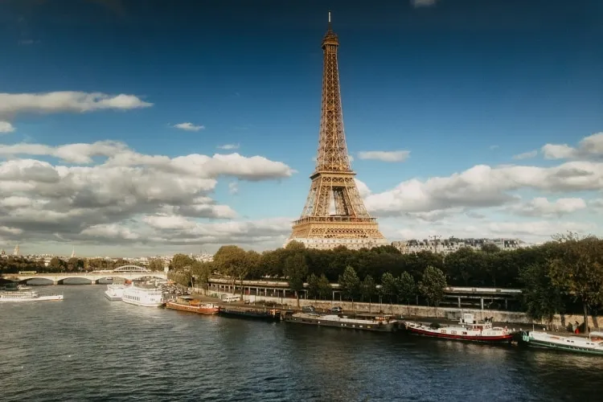

Seja bem vindo(a) ao site!

Torre Eiffel
É um dos maiores símbolos de Paris e da França como um todo. De acordo com a (euroDicas)[https://turismo.eurodicas.com.br/pontos-turisticos-na-europa/], o custo de viagem é de 36 euros, mas o valor real depende de quais recursos serão usados na visita e até onde ele irá visitar.
Coliseu
O Coliseu de Roma é um dos pontos turísticos na Europa e essencial em qualquer visita à capital italiana. De acordo com a (euroDicas)[https://turismo.eurodicas.com.br/pontos-turisticos-na-europa/], o custo de viagem é de 34 euros, mas o valor real depende de quais monumeros serão visitados (talvez inclua a quantidade de pessoas).